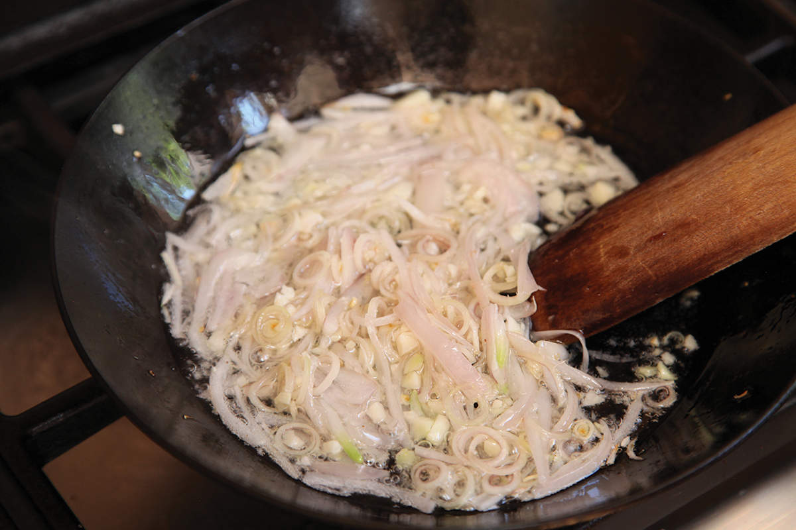
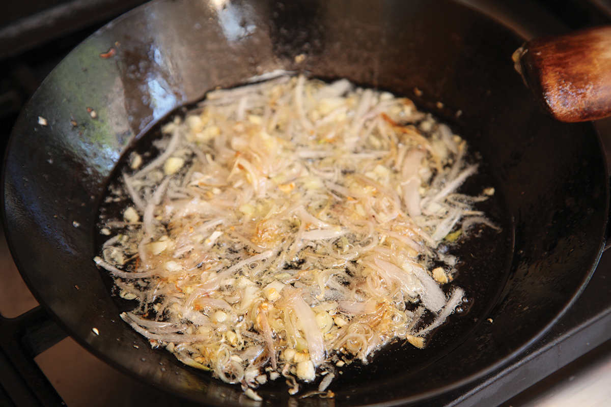
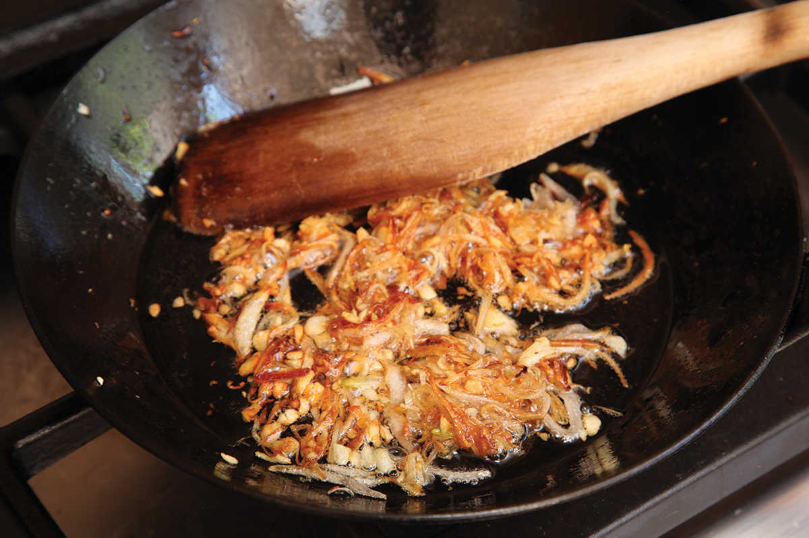
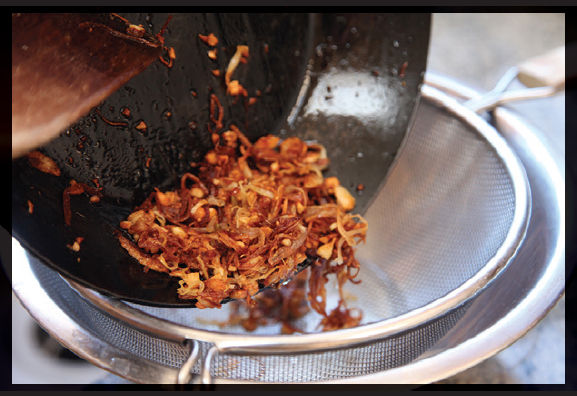
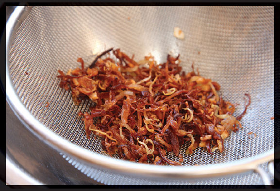

Step 1 • Trim and Slice the Shallots on a Mandoline
Trim the ends of your shallots and peel them, then slice them into rings on a mandoline. You don’t need a fancy one—a $25 plastic Benriner Japanese-style mandoline will do the job right. You want to adjust the thickness of the opening to inch—that’s about the thickness of two credit cards stacked on top of each other.
Step 2 • Set up a Landing Pad
When the shallots are done, you need to immediately drain and blot them of excess oil before the residual heat of the oil causes them to overcook. Ready your station by placing a fine-mesh strainer into a heatproof bowl for draining, then line a rimmed baking sheet with six layers (yes, six) of paper towels or clean kitchen towels for blotting.



Step 3 • Heat Them Slowly
Combine the shallots with cold vegetable oil in a wok or saucepan; about 2 cups of oil per pound of shallots is the right ratio. Set the wok over medium-high heat and begin to cook them. Starting the shallots in cold oil helps them cook more evenly.
Step 4 • Stir Constantly
As the shallots and oil heat up, stir constantly to make sure that the shallots cook evenly (if you stop stirring, you’ll probably notice that the shallots around the edges of the pan will be sizzling harder than those floating in the center. That’s why you stir. Cook until the shallots turn a pale golden brown and the sizzling starts to slow, 10 to 12 minutes total.
Step 5 • Drain Immediately
As soon as the shallots are uniformly pale golden with no white sections remaining, pour the content of the saucepan into the strainer set over the bowl. Shake the strainer, them immediately transfer the shallots to the paper-towel-lined baking sheet, spreading them into an even layer.
Step 6 • Blot and Season
Pick up one end of the top layer of paper towels and, shaking it gently, roll the shallots off the towel and onto the layer of towels below, then gently blot them with the first towel. Discard the first towel, then immediately spread the shallots back into a single layer. Repeat this process until you get to the last towel. The shallots should be mostly cool and dry by this point.
Step 7 • Season and Store
Season the shallots with a generous sprinkle of salt. Let them rest at room temperature until completely cooled, about 30 minutes. Transfer to a sealable container and store in a cool, dark pantry for up to 3 months (or, if your home is like mine, more like the 3 hours it takes before your spouse discovers and devours them).

